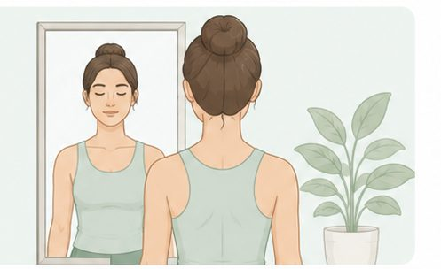
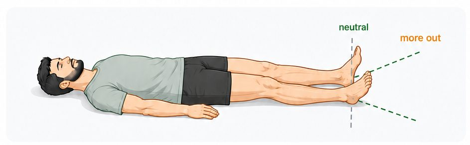
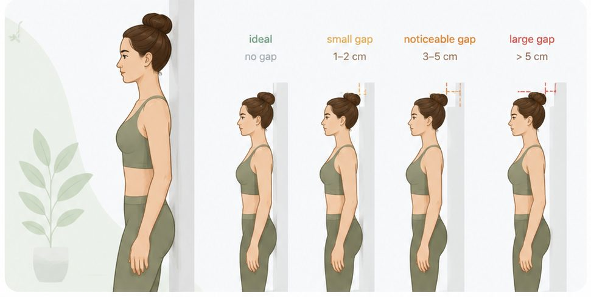

Three honest observations of your body. Nobody sees this but your program — the more accurate you are, the better it works.
Test 1 of 3
🧘 Shoulders, spine & pelvis in the mirror

Stand in front of a mirror. Feet hip-width apart. Relax completely. Look straight ahead.
Check four points: shoulders · collarbones · hip bones · neck
What you observe in the mirror is rarely about one specific area. Shoulders, collarbones, hips and neck are all connected through the spine and fascial system. If one shoulder is higher — the cause is often a pelvic tilt below, not a shoulder problem.
According to current scientific data, even mild postural asymmetry affects how the diaphragm works and how the nervous system distributes tension throughout the body. Your program will work with the whole chain.
Test 2 of 3
🦶 Feet while lying down

Lie on your back on a firm flat surface. Arms alongside your body. Fully relax your legs — do not try to position your feet deliberately. Close your eyes for a few seconds, let your muscles release. Then open your eyes and observe.
Check: rotation — is one foot turned more outward?
The natural resting position of your feet reflects the rotation pattern of your hip joints. If one foot falls more outward, this typically indicates tightness in the external rotators of that hip.
According to current scientific data, hip rotation asymmetry creates a chain reaction: the sacrum shifts, the lumbar spine compensates, the thoracic spine follows and the neck tilts. Since the diaphragm attaches to lumbar vertebrae (L1-L3), even breathing can become asymmetrical.
Test 3 of 3
🧍 Wall posture test

Stand with your back to a wall. Heels 5-10 cm from the wall. Press your buttocks and shoulder blades against the wall. Look straight ahead — do not tilt your chin.
Now try to touch the back of your head to the wall — naturally, without straining.
According to current scientific data (Occiput-to-Wall Distance test), each centimetre of forward head posture adds approximately 5 kg of load on the cervical spine. A 5 cm gap = 25 kg of constant extra load — leading to chronic neck tension and shallow breathing.
Rounded upper back restricts the diaphragm from descending fully. Shallower breathing increases nervous system activation and reduces recovery. Neck and thoracic joint gymnastics combined with breathing show improvement within 2-3 weeks.